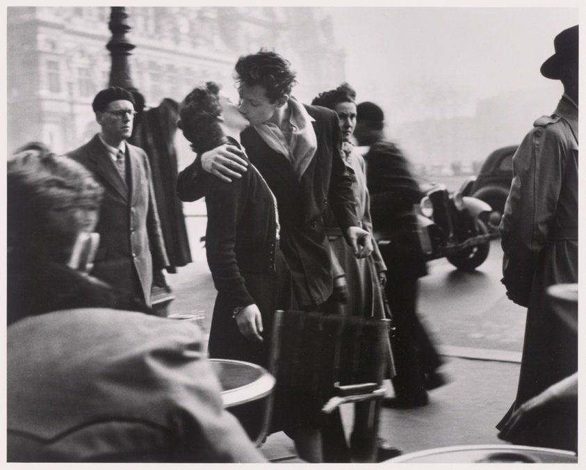

The Kiss on the Sidewalk (Le Baiser du Trottoir)
Robert Doisneau · 1950, printed 1979 · Gelatin silver print · 24.4 × 30.6 cm (image) · Art Institute of Chicago
In copyright. Look and learn: shown for study, not for download.
Robert Doisneau sold this picture to Life, which published it on 12 June 1950 in a photo-essay on couples kissing in Paris. Who the couple were was not known until 1992. Doisneau's father was a plumber who died on active service in the First World War, and Doisneau trained as an engraver and lithographer at the École Estienne. This print is the second in a portfolio of his work issued in 1979.